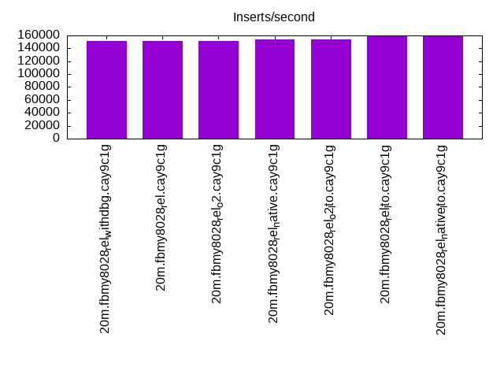
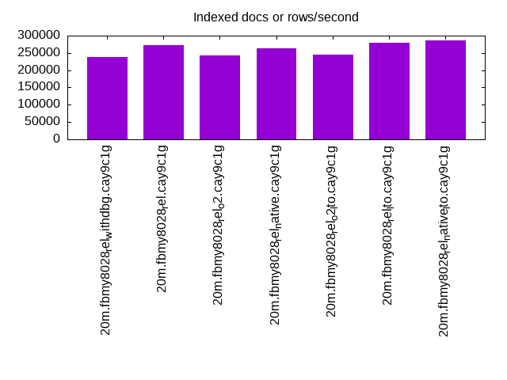
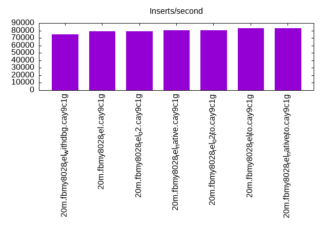
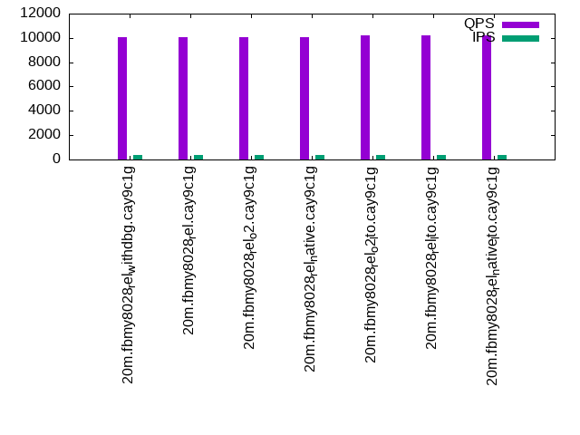
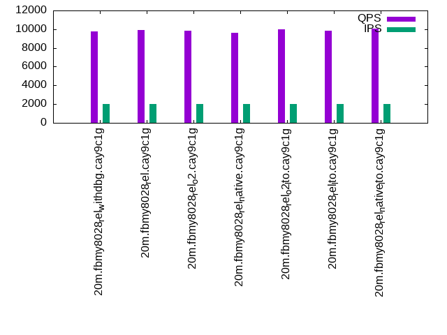
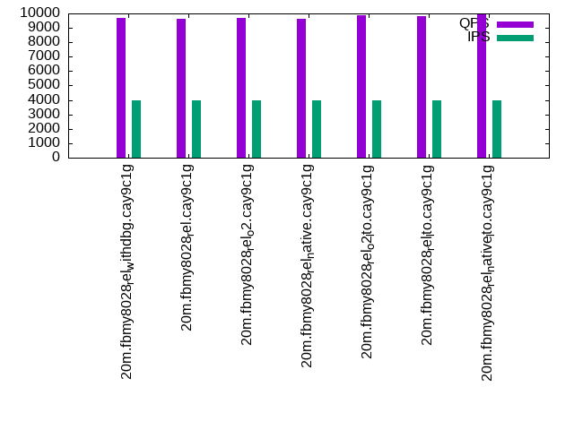

This is a report for the insert benchmark with 20M docs and 4 client(s). It is generated by scripts (bash, awk, sed) and Tufte might not be impressed. An overview of the insert benchmark is here and a short update is here. Below, by DBMS, I mean DBMS+version.config. An example is my8020.c10b40 where my means MySQL, 8020 is version 8.0.20 and c10b40 is the name for the configuration file.
The test server has 8 AMD cores, 16G RAM and an NVMe SSD. It is described here as the Beelink. The benchmark was run with 4 clients and there were 1 or 2 connections per client (1 for queries, 1 for inserts). The benchmark loads 20M rows without secondary indexes, creates secondary indexes, loads another 20M rows then does 3 read+write tests for one hour each that do queries as fast as possible with 100, 500 and then 1000 writes/second/client concurrent with the queries. There is one table per client. The database is cached by the OS page cache but not by the storage engine. Clients and the DBMS share one server. The per-database configs are in the per-database subdirectories here.
The tested DBMS are:
The numbers are inserts/s for l.i0 and l.i1, indexed docs (or rows) /s for l.x and queries/s for q*.2. The values are the average rate over the entire test for inserts (IPS) and queries (QPS). The range of values for IPS and QPS is split into 3 parts: bottom 25%, middle 50%, top 25%. Values in the bottom 25% have a red background, values in the top 25% have a green background and values in the middle have no color. A gray background is used for values that can be ignored because the DBMS did not sustain the target insert rate. Red backgrounds are not used when the minimum value is within 80% of the max value.
| dbms | l.i0 | l.x | l.i1 | q100.1 | q500.1 | q1000.1 |
|---|---|---|---|---|---|---|
| 20m.fbmy8028_rel_withdbg.cay9c1g | 151515 | 239286 | 74627 | 10078 | 9756 | 9679 |
| 20m.fbmy8028_rel.cay9c1g | 151515 | 271622 | 79051 | 10076 | 9878 | 9640 |
| 20m.fbmy8028_rel_o2.cay9c1g | 151515 | 242169 | 79051 | 10036 | 9832 | 9702 |
| 20m.fbmy8028_rel_native.cay9c1g | 153846 | 264474 | 80321 | 10029 | 9641 | 9617 |
| 20m.fbmy8028_rel_o2_lto.cay9c1g | 153846 | 245122 | 80321 | 10215 | 9966 | 9882 |
| 20m.fbmy8028_rel_lto.cay9c1g | 158730 | 279167 | 82988 | 10175 | 9843 | 9827 |
| 20m.fbmy8028_rel_native_lto.cay9c1g | 160000 | 287143 | 83333 | 10244 | 10067 | 9909 |
This table has relative throughput, throughput for the DBMS relative to the DBMS in the first line, using the absolute throughput from the previous table.
| dbms | l.i0 | l.x | l.i1 | q100.1 | q500.1 | q1000.1 |
|---|---|---|---|---|---|---|
| 20m.fbmy8028_rel_withdbg.cay9c1g | 1.00 | 1.00 | 1.00 | 1.00 | 1.00 | 1.00 |
| 20m.fbmy8028_rel.cay9c1g | 1.00 | 1.14 | 1.06 | 1.00 | 1.01 | 1.00 |
| 20m.fbmy8028_rel_o2.cay9c1g | 1.00 | 1.01 | 1.06 | 1.00 | 1.01 | 1.00 |
| 20m.fbmy8028_rel_native.cay9c1g | 1.02 | 1.11 | 1.08 | 1.00 | 0.99 | 0.99 |
| 20m.fbmy8028_rel_o2_lto.cay9c1g | 1.02 | 1.02 | 1.08 | 1.01 | 1.02 | 1.02 |
| 20m.fbmy8028_rel_lto.cay9c1g | 1.05 | 1.17 | 1.11 | 1.01 | 1.01 | 1.02 |
| 20m.fbmy8028_rel_native_lto.cay9c1g | 1.06 | 1.20 | 1.12 | 1.02 | 1.03 | 1.02 |
This lists the average rate of inserts/s for the tests that do inserts concurrent with queries. For such tests the query rate is listed in the table above. The read+write tests are setup so that the insert rate should match the target rate every second. Cells that are not at least 95% of the target have a red background to indicate a failure to satisfy the target.
| dbms | q100.1 | q500.1 | q1000.1 |
|---|---|---|---|
| fbmy8028_rel_withdbg.cay9c1g | 399 | 1994 | 3987 |
| fbmy8028_rel.cay9c1g | 399 | 1994 | 3989 |
| fbmy8028_rel_o2.cay9c1g | 399 | 1994 | 3989 |
| fbmy8028_rel_native.cay9c1g | 399 | 1994 | 3989 |
| fbmy8028_rel_o2_lto.cay9c1g | 399 | 1994 | 3989 |
| fbmy8028_rel_lto.cay9c1g | 399 | 1994 | 3989 |
| fbmy8028_rel_native_lto.cay9c1g | 399 | 1994 | 3989 |
| target | 400 | 2000 | 4000 |
l.i0: load without secondary indexes. Graphs for performance per 1-second interval are here.
Average throughput:
Insert response time histogram: each cell has the percentage of responses that take <= the time in the header and max is the max response time in seconds. For the max column values in the top 25% of the range have a red background and in the bottom 25% of the range have a green background. The red background is not used when the min value is within 80% of the max value.
| dbms | 256us | 1ms | 4ms | 16ms | 64ms | 256ms | 1s | 4s | 16s | gt | max |
|---|---|---|---|---|---|---|---|---|---|---|---|
| fbmy8028_rel_withdbg.cay9c1g | 99.253 | 0.536 | 0.198 | 0.013 | 0.121 | ||||||
| fbmy8028_rel.cay9c1g | 99.237 | 0.556 | 0.194 | 0.013 | 0.132 | ||||||
| fbmy8028_rel_o2.cay9c1g | 99.248 | 0.559 | 0.178 | 0.013 | 0.117 | ||||||
| fbmy8028_rel_native.cay9c1g | 99.272 | 0.517 | 0.198 | 0.013 | 0.126 | ||||||
| fbmy8028_rel_o2_lto.cay9c1g | 99.255 | 0.528 | 0.203 | 0.013 | 0.121 | ||||||
| fbmy8028_rel_lto.cay9c1g | 99.279 | 0.515 | 0.193 | 0.013 | 0.123 | ||||||
| fbmy8028_rel_native_lto.cay9c1g | 99.302 | 0.483 | 0.202 | 0.013 | 0.139 |
Performance metrics for the DBMS listed above. Some are normalized by throughput, others are not. Legend for results is here.
ips qps rps rmbps wps wmbps rpq rkbpq wpi wkbpi csps cpups cspq cpupq dbgb1 dbgb2 rss maxop p50 p99 tag 151515 0 0 0.0 112.5 42.6 0.000 0.000 0.001 0.288 15525 66.9 0.102 35 0.7 1.9 0.8 0.121 40556 26970 20m.fbmy8028_rel_withdbg.cay9c1g 151515 0 0 0.0 111.5 42.6 0.000 0.000 0.001 0.288 15619 66.4 0.103 35 0.7 1.9 0.8 0.132 41355 8890 20m.fbmy8028_rel.cay9c1g 151515 0 0 0.0 111.8 42.6 0.000 0.000 0.001 0.288 15606 67.1 0.103 35 0.7 1.9 0.7 0.117 40656 24483 20m.fbmy8028_rel_o2.cay9c1g 153846 0 0 0.0 112.1 42.6 0.000 0.000 0.001 0.284 15601 66.4 0.101 35 0.7 1.9 0.8 0.126 41355 11594 20m.fbmy8028_rel_native.cay9c1g 153846 0 0 0.0 112.6 42.6 0.000 0.000 0.001 0.284 15586 66.8 0.101 35 0.7 1.9 0.8 0.121 41654 5294 20m.fbmy8028_rel_o2_lto.cay9c1g 158730 0 0 0.0 116.3 44.3 0.000 0.000 0.001 0.286 16141 66.5 0.102 34 0.7 1.9 0.7 0.123 43352 34674 20m.fbmy8028_rel_lto.cay9c1g 160000 0 0 0.0 111.2 44.3 0.000 0.000 0.001 0.284 16148 66.6 0.101 33 0.7 1.9 0.8 0.139 43253 29267 20m.fbmy8028_rel_native_lto.cay9c1g
l.x: create secondary indexes.
Average throughput:
Performance metrics for the DBMS listed above. Some are normalized by throughput, others are not. Legend for results is here.
ips qps rps rmbps wps wmbps rpq rkbpq wpi wkbpi csps cpups cspq cpupq dbgb1 dbgb2 rss maxop p50 p99 tag 239286 0 1 0.0 94.4 39.4 0.000 0.000 0.000 0.169 680 48.1 0.003 16 1.4 2.7 2.2 0.014 NA NA 20m.fbmy8028_rel_withdbg.cay9c1g 271622 0 0 0.0 102.1 43.4 0.000 0.000 0.000 0.164 579 47.8 0.002 14 1.4 2.7 2.2 0.014 NA NA 20m.fbmy8028_rel.cay9c1g 242169 0 0 0.0 94.0 39.4 0.000 0.000 0.000 0.167 660 48.4 0.003 16 1.4 2.7 2.1 0.017 NA NA 20m.fbmy8028_rel_o2.cay9c1g 264474 0 1 0.0 108.4 44.4 0.000 0.000 0.000 0.172 638 47.1 0.002 14 1.4 2.7 2.2 0.017 NA NA 20m.fbmy8028_rel_native.cay9c1g 245122 0 0 0.0 95.4 40.5 0.000 0.000 0.000 0.169 658 48.1 0.003 16 1.4 2.7 2.2 0.009 NA NA 20m.fbmy8028_rel_o2_lto.cay9c1g 279167 0 1 0.0 115.3 47.1 0.000 0.000 0.000 0.173 709 47.2 0.003 14 1.4 2.7 2.2 0.009 NA NA 20m.fbmy8028_rel_lto.cay9c1g 287143 0 1 0.0 113.8 47.4 0.000 0.000 0.000 0.169 813 47.3 0.003 13 1.4 2.7 2.2 0.008 NA NA 20m.fbmy8028_rel_native_lto.cay9c1g
l.i1: continue load after secondary indexes created. Graphs for performance per 1-second interval are here.
Average throughput:
Insert response time histogram: each cell has the percentage of responses that take <= the time in the header and max is the max response time in seconds. For the max column values in the top 25% of the range have a red background and in the bottom 25% of the range have a green background. The red background is not used when the min value is within 80% of the max value.
| dbms | 256us | 1ms | 4ms | 16ms | 64ms | 256ms | 1s | 4s | 16s | gt | max |
|---|---|---|---|---|---|---|---|---|---|---|---|
| fbmy8028_rel_withdbg.cay9c1g | 99.022 | 0.849 | 0.103 | 0.006 | 0.020 | 0.763 | |||||
| fbmy8028_rel.cay9c1g | 99.165 | 0.716 | 0.113 | 0.006 | 0.128 | ||||||
| fbmy8028_rel_o2.cay9c1g | 99.091 | 0.785 | 0.119 | 0.005 | 0.119 | ||||||
| fbmy8028_rel_native.cay9c1g | 99.229 | 0.652 | 0.112 | 0.007 | 0.153 | ||||||
| fbmy8028_rel_o2_lto.cay9c1g | 99.080 | 0.795 | 0.119 | 0.006 | 0.122 | ||||||
| fbmy8028_rel_lto.cay9c1g | 99.251 | 0.642 | 0.100 | 0.007 | 0.122 | ||||||
| fbmy8028_rel_native_lto.cay9c1g | 99.250 | 0.637 | 0.106 | 0.007 | 0.108 |
Performance metrics for the DBMS listed above. Some are normalized by throughput, others are not. Legend for results is here.
ips qps rps rmbps wps wmbps rpq rkbpq wpi wkbpi csps cpups cspq cpupq dbgb1 dbgb2 rss maxop p50 p99 tag 74627 0 15 1.8 154.9 59.8 0.000 0.025 0.002 0.821 16160 73.7 0.217 79 3.8 5.7 1.7 0.763 20028 50 20m.fbmy8028_rel_withdbg.cay9c1g 79051 0 15 1.9 159.4 62.0 0.000 0.024 0.002 0.803 17248 74.1 0.218 75 3.6 5.5 1.8 0.128 20328 15533 20m.fbmy8028_rel.cay9c1g 79051 0 13 1.6 161.2 62.1 0.000 0.021 0.002 0.805 17099 74.7 0.216 76 3.8 5.8 1.7 0.119 20178 15933 20m.fbmy8028_rel_o2.cay9c1g 80321 0 9 1.1 161.5 62.0 0.000 0.014 0.002 0.790 17340 74.4 0.216 74 5.0 6.9 1.8 0.153 20634 14934 20m.fbmy8028_rel_native.cay9c1g 80321 0 18 2.2 157.8 61.0 0.000 0.028 0.002 0.778 17222 74.8 0.214 75 3.4 5.4 1.8 0.122 20485 15583 20m.fbmy8028_rel_o2_lto.cay9c1g 82988 0 20 2.5 169.0 65.4 0.000 0.031 0.002 0.807 17839 74.4 0.215 72 3.3 5.3 1.8 0.122 21177 16538 20m.fbmy8028_rel_lto.cay9c1g 83333 0 16 1.9 168.4 65.4 0.000 0.023 0.002 0.804 17939 74.3 0.215 71 3.5 5.4 1.7 0.108 21377 15783 20m.fbmy8028_rel_native_lto.cay9c1g
q100.1: range queries with 100 insert/s per client. Graphs for performance per 1-second interval are here.
Average throughput:
Query response time histogram: each cell has the percentage of responses that take <= the time in the header and max is the max response time in seconds. For max values in the top 25% of the range have a red background and in the bottom 25% of the range have a green background. The red background is not used when the min value is within 80% of the max value.
| dbms | 256us | 1ms | 4ms | 16ms | 64ms | 256ms | 1s | 4s | 16s | gt | max |
|---|---|---|---|---|---|---|---|---|---|---|---|
| fbmy8028_rel_withdbg.cay9c1g | 3.856 | 96.133 | 0.011 | 0.001 | nonzero | 0.016 | |||||
| fbmy8028_rel.cay9c1g | 4.363 | 95.625 | 0.012 | 0.001 | 0.008 | ||||||
| fbmy8028_rel_o2.cay9c1g | 4.084 | 95.904 | 0.011 | nonzero | 0.013 | ||||||
| fbmy8028_rel_native.cay9c1g | 3.508 | 96.480 | 0.011 | 0.001 | 0.014 | ||||||
| fbmy8028_rel_o2_lto.cay9c1g | 6.335 | 93.653 | 0.011 | 0.001 | 0.009 | ||||||
| fbmy8028_rel_lto.cay9c1g | 6.289 | 93.700 | 0.010 | nonzero | 0.013 | ||||||
| fbmy8028_rel_native_lto.cay9c1g | 7.171 | 92.818 | 0.010 | nonzero | 0.014 |
Insert response time histogram: each cell has the percentage of responses that take <= the time in the header and max is the max response time in seconds. For max values in the top 25% of the range have a red background and in the bottom 25% of the range have a green background. The red background is not used when the min value is within 80% of the max value.
| dbms | 256us | 1ms | 4ms | 16ms | 64ms | 256ms | 1s | 4s | 16s | gt | max |
|---|---|---|---|---|---|---|---|---|---|---|---|
| fbmy8028_rel_withdbg.cay9c1g | 99.604 | 0.354 | 0.042 | 0.017 | |||||||
| fbmy8028_rel.cay9c1g | 99.333 | 0.618 | 0.049 | 0.018 | |||||||
| fbmy8028_rel_o2.cay9c1g | 99.444 | 0.521 | 0.035 | 0.017 | |||||||
| fbmy8028_rel_native.cay9c1g | 99.521 | 0.438 | 0.042 | 0.023 | |||||||
| fbmy8028_rel_o2_lto.cay9c1g | 99.556 | 0.403 | 0.042 | 0.018 | |||||||
| fbmy8028_rel_lto.cay9c1g | 99.521 | 0.444 | 0.035 | 0.017 | |||||||
| fbmy8028_rel_native_lto.cay9c1g | 99.653 | 0.319 | 0.028 | 0.017 |
Performance metrics for the DBMS listed above. Some are normalized by throughput, others are not. Legend for results is here.
ips qps rps rmbps wps wmbps rpq rkbpq wpi wkbpi csps cpups cspq cpupq dbgb1 dbgb2 rss maxop p50 p99 tag 399 10078 4 0.1 7.0 1.6 0.000 0.011 0.017 3.988 38099 51.1 3.780 406 2.8 4.9 1.9 0.016 2525 2062 20m.fbmy8028_rel_withdbg.cay9c1g 399 10076 11 0.2 7.2 1.7 0.001 0.016 0.018 4.437 38072 51.2 3.779 407 2.8 4.9 1.7 0.008 2541 2031 20m.fbmy8028_rel.cay9c1g 399 10036 10 0.2 7.0 1.5 0.001 0.017 0.017 3.957 38006 51.0 3.787 407 2.9 4.9 1.8 0.013 2477 1950 20m.fbmy8028_rel_o2.cay9c1g 399 10029 22 0.3 7.9 1.9 0.002 0.028 0.020 5.000 37875 51.3 3.776 409 2.8 4.8 1.8 0.014 2510 2031 20m.fbmy8028_rel_native.cay9c1g 399 10215 8 0.1 7.3 1.7 0.001 0.012 0.018 4.441 38592 51.2 3.778 401 2.8 4.9 1.7 0.009 2557 2078 20m.fbmy8028_rel_o2_lto.cay9c1g 399 10175 3 0.1 6.5 1.4 0.000 0.008 0.016 3.662 38541 51.0 3.788 401 2.9 4.9 1.8 0.013 2573 2079 20m.fbmy8028_rel_lto.cay9c1g 399 10244 14 0.2 7.4 1.7 0.001 0.015 0.019 4.458 38719 51.2 3.780 400 2.8 4.8 1.8 0.014 2573 2047 20m.fbmy8028_rel_native_lto.cay9c1g
q500.1: range queries with 500 insert/s per client. Graphs for performance per 1-second interval are here.
Average throughput:
Query response time histogram: each cell has the percentage of responses that take <= the time in the header and max is the max response time in seconds. For max values in the top 25% of the range have a red background and in the bottom 25% of the range have a green background. The red background is not used when the min value is within 80% of the max value.
| dbms | 256us | 1ms | 4ms | 16ms | 64ms | 256ms | 1s | 4s | 16s | gt | max |
|---|---|---|---|---|---|---|---|---|---|---|---|
| fbmy8028_rel_withdbg.cay9c1g | 1.306 | 98.633 | 0.057 | 0.004 | nonzero | 0.018 | |||||
| fbmy8028_rel.cay9c1g | 1.851 | 98.098 | 0.049 | 0.003 | 0.016 | ||||||
| fbmy8028_rel_o2.cay9c1g | 1.326 | 98.618 | 0.053 | 0.003 | nonzero | 0.020 | |||||
| fbmy8028_rel_native.cay9c1g | 1.243 | 98.704 | 0.050 | 0.003 | nonzero | 0.017 | |||||
| fbmy8028_rel_o2_lto.cay9c1g | 2.944 | 96.999 | 0.055 | 0.003 | nonzero | 0.020 | |||||
| fbmy8028_rel_lto.cay9c1g | 2.703 | 97.250 | 0.045 | 0.002 | nonzero | 0.016 | |||||
| fbmy8028_rel_native_lto.cay9c1g | 4.125 | 95.826 | 0.046 | 0.002 | nonzero | 0.020 |
Insert response time histogram: each cell has the percentage of responses that take <= the time in the header and max is the max response time in seconds. For max values in the top 25% of the range have a red background and in the bottom 25% of the range have a green background. The red background is not used when the min value is within 80% of the max value.
| dbms | 256us | 1ms | 4ms | 16ms | 64ms | 256ms | 1s | 4s | 16s | gt | max |
|---|---|---|---|---|---|---|---|---|---|---|---|
| fbmy8028_rel_withdbg.cay9c1g | 94.626 | 5.232 | 0.140 | 0.001 | 0.069 | ||||||
| fbmy8028_rel.cay9c1g | 96.871 | 3.049 | 0.081 | 0.051 | |||||||
| fbmy8028_rel_o2.cay9c1g | 96.419 | 3.471 | 0.110 | 0.062 | |||||||
| fbmy8028_rel_native.cay9c1g | 98.119 | 1.801 | 0.079 | 0.062 | |||||||
| fbmy8028_rel_o2_lto.cay9c1g | 97.129 | 2.771 | 0.099 | 0.001 | 0.067 | ||||||
| fbmy8028_rel_lto.cay9c1g | 97.642 | 2.278 | 0.079 | 0.001 | 0.066 | ||||||
| fbmy8028_rel_native_lto.cay9c1g | 97.869 | 2.046 | 0.083 | 0.001 | 0.065 |
Performance metrics for the DBMS listed above. Some are normalized by throughput, others are not. Legend for results is here.
ips qps rps rmbps wps wmbps rpq rkbpq wpi wkbpi csps cpups cspq cpupq dbgb1 dbgb2 rss maxop p50 p99 tag 1994 9756 0 0.0 7.4 1.7 0.000 0.000 0.004 0.887 36804 51.8 3.772 425 3.2 3.7 1.7 0.018 2413 1982 20m.fbmy8028_rel_withdbg.cay9c1g 1994 9878 0 0.0 7.4 1.7 0.000 0.000 0.004 0.886 37263 51.8 3.772 420 3.2 3.7 1.7 0.016 2461 2030 20m.fbmy8028_rel.cay9c1g 1994 9832 0 0.0 7.4 1.8 0.000 0.000 0.004 0.928 37064 51.8 3.770 422 3.2 3.7 1.8 0.020 2477 1998 20m.fbmy8028_rel_o2.cay9c1g 1994 9641 0 0.0 8.3 2.1 0.000 0.000 0.004 1.101 36308 52.0 3.766 431 3.1 3.6 1.7 0.017 2413 1983 20m.fbmy8028_rel_native.cay9c1g 1994 9966 0 0.0 8.4 2.2 0.000 0.000 0.004 1.142 37497 51.9 3.762 417 3.1 3.6 1.7 0.020 2509 2030 20m.fbmy8028_rel_o2_lto.cay9c1g 1994 9843 0 0.0 8.0 2.0 0.000 0.000 0.004 1.040 37084 51.8 3.768 421 3.2 3.7 1.8 0.016 2477 2062 20m.fbmy8028_rel_lto.cay9c1g 1994 10067 0 0.0 7.1 1.6 0.000 0.000 0.004 0.845 38005 51.6 3.775 410 3.2 3.7 1.7 0.020 2493 2062 20m.fbmy8028_rel_native_lto.cay9c1g
q1000.1: range queries with 1000 insert/s per client. Graphs for performance per 1-second interval are here.
Average throughput:
Query response time histogram: each cell has the percentage of responses that take <= the time in the header and max is the max response time in seconds. For max values in the top 25% of the range have a red background and in the bottom 25% of the range have a green background. The red background is not used when the min value is within 80% of the max value.
| dbms | 256us | 1ms | 4ms | 16ms | 64ms | 256ms | 1s | 4s | 16s | gt | max |
|---|---|---|---|---|---|---|---|---|---|---|---|
| fbmy8028_rel_withdbg.cay9c1g | 0.834 | 99.023 | 0.137 | 0.006 | nonzero | 0.021 | |||||
| fbmy8028_rel.cay9c1g | 1.028 | 98.822 | 0.143 | 0.007 | nonzero | 0.024 | |||||
| fbmy8028_rel_o2.cay9c1g | 1.001 | 98.859 | 0.133 | 0.006 | nonzero | 0.023 | |||||
| fbmy8028_rel_native.cay9c1g | 1.018 | 98.831 | 0.144 | 0.007 | nonzero | 0.019 | |||||
| fbmy8028_rel_o2_lto.cay9c1g | 1.993 | 97.889 | 0.112 | 0.005 | nonzero | 0.021 | |||||
| fbmy8028_rel_lto.cay9c1g | 2.154 | 97.743 | 0.099 | 0.004 | nonzero | 0.020 | |||||
| fbmy8028_rel_native_lto.cay9c1g | 2.866 | 97.016 | 0.113 | 0.005 | nonzero | 0.019 |
Insert response time histogram: each cell has the percentage of responses that take <= the time in the header and max is the max response time in seconds. For max values in the top 25% of the range have a red background and in the bottom 25% of the range have a green background. The red background is not used when the min value is within 80% of the max value.
| dbms | 256us | 1ms | 4ms | 16ms | 64ms | 256ms | 1s | 4s | 16s | gt | max |
|---|---|---|---|---|---|---|---|---|---|---|---|
| fbmy8028_rel_withdbg.cay9c1g | 91.142 | 8.703 | 0.154 | 0.001 | 0.064 | ||||||
| fbmy8028_rel.cay9c1g | 91.654 | 8.169 | 0.176 | 0.001 | 0.065 | ||||||
| fbmy8028_rel_o2.cay9c1g | 93.572 | 6.308 | 0.119 | 0.001 | 0.067 | ||||||
| fbmy8028_rel_native.cay9c1g | 87.970 | 11.840 | 0.190 | 0.001 | 0.066 | ||||||
| fbmy8028_rel_o2_lto.cay9c1g | 94.107 | 5.773 | 0.120 | 0.058 | |||||||
| fbmy8028_rel_lto.cay9c1g | 97.814 | 2.089 | 0.096 | 0.001 | 0.114 | ||||||
| fbmy8028_rel_native_lto.cay9c1g | 94.706 | 5.166 | 0.128 | 0.061 |
Performance metrics for the DBMS listed above. Some are normalized by throughput, others are not. Legend for results is here.
ips qps rps rmbps wps wmbps rpq rkbpq wpi wkbpi csps cpups cspq cpupq dbgb1 dbgb2 rss maxop p50 p99 tag 3987 9679 0 0.0 15.4 4.9 0.000 0.000 0.004 1.266 35831 53.9 3.702 446 3.6 5.1 1.8 0.021 2445 2014 20m.fbmy8028_rel_withdbg.cay9c1g 3989 9640 0 0.0 15.4 4.9 0.000 0.000 0.004 1.265 35713 54.0 3.704 448 3.6 5.1 1.8 0.024 2429 1998 20m.fbmy8028_rel.cay9c1g 3989 9702 0 0.0 16.5 5.4 0.000 0.000 0.004 1.387 35781 54.3 3.688 448 3.7 5.1 1.8 0.023 2445 1998 20m.fbmy8028_rel_o2.cay9c1g 3989 9617 0 0.0 15.3 5.0 0.000 0.000 0.004 1.276 35589 53.9 3.701 448 3.7 5.1 1.8 0.019 2397 2030 20m.fbmy8028_rel_native.cay9c1g 3989 9882 0 0.0 15.3 4.8 0.000 0.000 0.004 1.234 36529 54.0 3.697 437 3.7 5.1 1.8 0.021 2493 2046 20m.fbmy8028_rel_o2_lto.cay9c1g 3989 9827 0 0.0 15.2 4.9 0.000 0.000 0.004 1.249 36348 53.8 3.699 438 3.7 5.1 1.8 0.020 2461 2014 20m.fbmy8028_rel_lto.cay9c1g 3989 9909 0 0.0 15.3 4.9 0.000 0.000 0.004 1.262 36735 53.8 3.707 434 3.7 5.1 1.8 0.019 2493 2014 20m.fbmy8028_rel_native_lto.cay9c1g
l.i0: load without secondary indexes
Performance metrics for all DBMS, not just the ones listed above. Some are normalized by throughput, others are not. Legend for results is here.
ips qps rps rmbps wps wmbps rpq rkbpq wpi wkbpi csps cpups cspq cpupq dbgb1 dbgb2 rss maxop p50 p99 tag 151515 0 0 0.0 112.5 42.6 0.000 0.000 0.001 0.288 15525 66.9 0.102 35 0.7 1.9 0.8 0.121 40556 26970 20m.fbmy8028_rel_withdbg.cay9c1g 151515 0 0 0.0 111.5 42.6 0.000 0.000 0.001 0.288 15619 66.4 0.103 35 0.7 1.9 0.8 0.132 41355 8890 20m.fbmy8028_rel.cay9c1g 151515 0 0 0.0 111.8 42.6 0.000 0.000 0.001 0.288 15606 67.1 0.103 35 0.7 1.9 0.7 0.117 40656 24483 20m.fbmy8028_rel_o2.cay9c1g 153846 0 0 0.0 112.1 42.6 0.000 0.000 0.001 0.284 15601 66.4 0.101 35 0.7 1.9 0.8 0.126 41355 11594 20m.fbmy8028_rel_native.cay9c1g 153846 0 0 0.0 112.6 42.6 0.000 0.000 0.001 0.284 15586 66.8 0.101 35 0.7 1.9 0.8 0.121 41654 5294 20m.fbmy8028_rel_o2_lto.cay9c1g 158730 0 0 0.0 116.3 44.3 0.000 0.000 0.001 0.286 16141 66.5 0.102 34 0.7 1.9 0.7 0.123 43352 34674 20m.fbmy8028_rel_lto.cay9c1g 160000 0 0 0.0 111.2 44.3 0.000 0.000 0.001 0.284 16148 66.6 0.101 33 0.7 1.9 0.8 0.139 43253 29267 20m.fbmy8028_rel_native_lto.cay9c1g
l.x: create secondary indexes
Performance metrics for all DBMS, not just the ones listed above. Some are normalized by throughput, others are not. Legend for results is here.
ips qps rps rmbps wps wmbps rpq rkbpq wpi wkbpi csps cpups cspq cpupq dbgb1 dbgb2 rss maxop p50 p99 tag 239286 0 1 0.0 94.4 39.4 0.000 0.000 0.000 0.169 680 48.1 0.003 16 1.4 2.7 2.2 0.014 NA NA 20m.fbmy8028_rel_withdbg.cay9c1g 271622 0 0 0.0 102.1 43.4 0.000 0.000 0.000 0.164 579 47.8 0.002 14 1.4 2.7 2.2 0.014 NA NA 20m.fbmy8028_rel.cay9c1g 242169 0 0 0.0 94.0 39.4 0.000 0.000 0.000 0.167 660 48.4 0.003 16 1.4 2.7 2.1 0.017 NA NA 20m.fbmy8028_rel_o2.cay9c1g 264474 0 1 0.0 108.4 44.4 0.000 0.000 0.000 0.172 638 47.1 0.002 14 1.4 2.7 2.2 0.017 NA NA 20m.fbmy8028_rel_native.cay9c1g 245122 0 0 0.0 95.4 40.5 0.000 0.000 0.000 0.169 658 48.1 0.003 16 1.4 2.7 2.2 0.009 NA NA 20m.fbmy8028_rel_o2_lto.cay9c1g 279167 0 1 0.0 115.3 47.1 0.000 0.000 0.000 0.173 709 47.2 0.003 14 1.4 2.7 2.2 0.009 NA NA 20m.fbmy8028_rel_lto.cay9c1g 287143 0 1 0.0 113.8 47.4 0.000 0.000 0.000 0.169 813 47.3 0.003 13 1.4 2.7 2.2 0.008 NA NA 20m.fbmy8028_rel_native_lto.cay9c1g
l.i1: continue load after secondary indexes created
Performance metrics for all DBMS, not just the ones listed above. Some are normalized by throughput, others are not. Legend for results is here.
ips qps rps rmbps wps wmbps rpq rkbpq wpi wkbpi csps cpups cspq cpupq dbgb1 dbgb2 rss maxop p50 p99 tag 74627 0 15 1.8 154.9 59.8 0.000 0.025 0.002 0.821 16160 73.7 0.217 79 3.8 5.7 1.7 0.763 20028 50 20m.fbmy8028_rel_withdbg.cay9c1g 79051 0 15 1.9 159.4 62.0 0.000 0.024 0.002 0.803 17248 74.1 0.218 75 3.6 5.5 1.8 0.128 20328 15533 20m.fbmy8028_rel.cay9c1g 79051 0 13 1.6 161.2 62.1 0.000 0.021 0.002 0.805 17099 74.7 0.216 76 3.8 5.8 1.7 0.119 20178 15933 20m.fbmy8028_rel_o2.cay9c1g 80321 0 9 1.1 161.5 62.0 0.000 0.014 0.002 0.790 17340 74.4 0.216 74 5.0 6.9 1.8 0.153 20634 14934 20m.fbmy8028_rel_native.cay9c1g 80321 0 18 2.2 157.8 61.0 0.000 0.028 0.002 0.778 17222 74.8 0.214 75 3.4 5.4 1.8 0.122 20485 15583 20m.fbmy8028_rel_o2_lto.cay9c1g 82988 0 20 2.5 169.0 65.4 0.000 0.031 0.002 0.807 17839 74.4 0.215 72 3.3 5.3 1.8 0.122 21177 16538 20m.fbmy8028_rel_lto.cay9c1g 83333 0 16 1.9 168.4 65.4 0.000 0.023 0.002 0.804 17939 74.3 0.215 71 3.5 5.4 1.7 0.108 21377 15783 20m.fbmy8028_rel_native_lto.cay9c1g
q100.1: range queries with 100 insert/s per client
Performance metrics for all DBMS, not just the ones listed above. Some are normalized by throughput, others are not. Legend for results is here.
ips qps rps rmbps wps wmbps rpq rkbpq wpi wkbpi csps cpups cspq cpupq dbgb1 dbgb2 rss maxop p50 p99 tag 399 10078 4 0.1 7.0 1.6 0.000 0.011 0.017 3.988 38099 51.1 3.780 406 2.8 4.9 1.9 0.016 2525 2062 20m.fbmy8028_rel_withdbg.cay9c1g 399 10076 11 0.2 7.2 1.7 0.001 0.016 0.018 4.437 38072 51.2 3.779 407 2.8 4.9 1.7 0.008 2541 2031 20m.fbmy8028_rel.cay9c1g 399 10036 10 0.2 7.0 1.5 0.001 0.017 0.017 3.957 38006 51.0 3.787 407 2.9 4.9 1.8 0.013 2477 1950 20m.fbmy8028_rel_o2.cay9c1g 399 10029 22 0.3 7.9 1.9 0.002 0.028 0.020 5.000 37875 51.3 3.776 409 2.8 4.8 1.8 0.014 2510 2031 20m.fbmy8028_rel_native.cay9c1g 399 10215 8 0.1 7.3 1.7 0.001 0.012 0.018 4.441 38592 51.2 3.778 401 2.8 4.9 1.7 0.009 2557 2078 20m.fbmy8028_rel_o2_lto.cay9c1g 399 10175 3 0.1 6.5 1.4 0.000 0.008 0.016 3.662 38541 51.0 3.788 401 2.9 4.9 1.8 0.013 2573 2079 20m.fbmy8028_rel_lto.cay9c1g 399 10244 14 0.2 7.4 1.7 0.001 0.015 0.019 4.458 38719 51.2 3.780 400 2.8 4.8 1.8 0.014 2573 2047 20m.fbmy8028_rel_native_lto.cay9c1g
q500.1: range queries with 500 insert/s per client
Performance metrics for all DBMS, not just the ones listed above. Some are normalized by throughput, others are not. Legend for results is here.
ips qps rps rmbps wps wmbps rpq rkbpq wpi wkbpi csps cpups cspq cpupq dbgb1 dbgb2 rss maxop p50 p99 tag 1994 9756 0 0.0 7.4 1.7 0.000 0.000 0.004 0.887 36804 51.8 3.772 425 3.2 3.7 1.7 0.018 2413 1982 20m.fbmy8028_rel_withdbg.cay9c1g 1994 9878 0 0.0 7.4 1.7 0.000 0.000 0.004 0.886 37263 51.8 3.772 420 3.2 3.7 1.7 0.016 2461 2030 20m.fbmy8028_rel.cay9c1g 1994 9832 0 0.0 7.4 1.8 0.000 0.000 0.004 0.928 37064 51.8 3.770 422 3.2 3.7 1.8 0.020 2477 1998 20m.fbmy8028_rel_o2.cay9c1g 1994 9641 0 0.0 8.3 2.1 0.000 0.000 0.004 1.101 36308 52.0 3.766 431 3.1 3.6 1.7 0.017 2413 1983 20m.fbmy8028_rel_native.cay9c1g 1994 9966 0 0.0 8.4 2.2 0.000 0.000 0.004 1.142 37497 51.9 3.762 417 3.1 3.6 1.7 0.020 2509 2030 20m.fbmy8028_rel_o2_lto.cay9c1g 1994 9843 0 0.0 8.0 2.0 0.000 0.000 0.004 1.040 37084 51.8 3.768 421 3.2 3.7 1.8 0.016 2477 2062 20m.fbmy8028_rel_lto.cay9c1g 1994 10067 0 0.0 7.1 1.6 0.000 0.000 0.004 0.845 38005 51.6 3.775 410 3.2 3.7 1.7 0.020 2493 2062 20m.fbmy8028_rel_native_lto.cay9c1g
q1000.1: range queries with 1000 insert/s per client
Performance metrics for all DBMS, not just the ones listed above. Some are normalized by throughput, others are not. Legend for results is here.
ips qps rps rmbps wps wmbps rpq rkbpq wpi wkbpi csps cpups cspq cpupq dbgb1 dbgb2 rss maxop p50 p99 tag 3987 9679 0 0.0 15.4 4.9 0.000 0.000 0.004 1.266 35831 53.9 3.702 446 3.6 5.1 1.8 0.021 2445 2014 20m.fbmy8028_rel_withdbg.cay9c1g 3989 9640 0 0.0 15.4 4.9 0.000 0.000 0.004 1.265 35713 54.0 3.704 448 3.6 5.1 1.8 0.024 2429 1998 20m.fbmy8028_rel.cay9c1g 3989 9702 0 0.0 16.5 5.4 0.000 0.000 0.004 1.387 35781 54.3 3.688 448 3.7 5.1 1.8 0.023 2445 1998 20m.fbmy8028_rel_o2.cay9c1g 3989 9617 0 0.0 15.3 5.0 0.000 0.000 0.004 1.276 35589 53.9 3.701 448 3.7 5.1 1.8 0.019 2397 2030 20m.fbmy8028_rel_native.cay9c1g 3989 9882 0 0.0 15.3 4.8 0.000 0.000 0.004 1.234 36529 54.0 3.697 437 3.7 5.1 1.8 0.021 2493 2046 20m.fbmy8028_rel_o2_lto.cay9c1g 3989 9827 0 0.0 15.2 4.9 0.000 0.000 0.004 1.249 36348 53.8 3.699 438 3.7 5.1 1.8 0.020 2461 2014 20m.fbmy8028_rel_lto.cay9c1g 3989 9909 0 0.0 15.3 4.9 0.000 0.000 0.004 1.262 36735 53.8 3.707 434 3.7 5.1 1.8 0.019 2493 2014 20m.fbmy8028_rel_native_lto.cay9c1g
Insert response time histogram
256us 1ms 4ms 16ms 64ms 256ms 1s 4s 16s gt max tag 0.000 0.000 99.253 0.536 0.198 0.013 0.000 0.000 0.000 0.000 0.121 fbmy8028_rel_withdbg.cay9c1g 0.000 0.000 99.237 0.556 0.194 0.013 0.000 0.000 0.000 0.000 0.132 fbmy8028_rel.cay9c1g 0.000 0.000 99.248 0.559 0.178 0.013 0.000 0.000 0.000 0.000 0.117 fbmy8028_rel_o2.cay9c1g 0.000 0.000 99.272 0.517 0.198 0.013 0.000 0.000 0.000 0.000 0.126 fbmy8028_rel_native.cay9c1g 0.000 0.000 99.255 0.528 0.203 0.013 0.000 0.000 0.000 0.000 0.121 fbmy8028_rel_o2_lto.cay9c1g 0.000 0.000 99.279 0.515 0.193 0.013 0.000 0.000 0.000 0.000 0.123 fbmy8028_rel_lto.cay9c1g 0.000 0.000 99.302 0.483 0.202 0.013 0.000 0.000 0.000 0.000 0.139 fbmy8028_rel_native_lto.cay9c1g
TODO - determine whether there is data for create index response time
Insert response time histogram
256us 1ms 4ms 16ms 64ms 256ms 1s 4s 16s gt max tag 0.000 0.000 99.022 0.849 0.103 0.006 0.020 0.000 0.000 0.000 0.763 fbmy8028_rel_withdbg.cay9c1g 0.000 0.000 99.165 0.716 0.113 0.006 0.000 0.000 0.000 0.000 0.128 fbmy8028_rel.cay9c1g 0.000 0.000 99.091 0.785 0.119 0.005 0.000 0.000 0.000 0.000 0.119 fbmy8028_rel_o2.cay9c1g 0.000 0.000 99.229 0.652 0.112 0.007 0.000 0.000 0.000 0.000 0.153 fbmy8028_rel_native.cay9c1g 0.000 0.000 99.080 0.795 0.119 0.006 0.000 0.000 0.000 0.000 0.122 fbmy8028_rel_o2_lto.cay9c1g 0.000 0.000 99.251 0.642 0.100 0.007 0.000 0.000 0.000 0.000 0.122 fbmy8028_rel_lto.cay9c1g 0.000 0.000 99.250 0.637 0.106 0.007 0.000 0.000 0.000 0.000 0.108 fbmy8028_rel_native_lto.cay9c1g
Query response time histogram
256us 1ms 4ms 16ms 64ms 256ms 1s 4s 16s gt max tag 3.856 96.133 0.011 0.001 nonzero 0.000 0.000 0.000 0.000 0.000 0.016 fbmy8028_rel_withdbg.cay9c1g 4.363 95.625 0.012 0.001 0.000 0.000 0.000 0.000 0.000 0.000 0.008 fbmy8028_rel.cay9c1g 4.084 95.904 0.011 nonzero 0.000 0.000 0.000 0.000 0.000 0.000 0.013 fbmy8028_rel_o2.cay9c1g 3.508 96.480 0.011 0.001 0.000 0.000 0.000 0.000 0.000 0.000 0.014 fbmy8028_rel_native.cay9c1g 6.335 93.653 0.011 0.001 0.000 0.000 0.000 0.000 0.000 0.000 0.009 fbmy8028_rel_o2_lto.cay9c1g 6.289 93.700 0.010 nonzero 0.000 0.000 0.000 0.000 0.000 0.000 0.013 fbmy8028_rel_lto.cay9c1g 7.171 92.818 0.010 nonzero 0.000 0.000 0.000 0.000 0.000 0.000 0.014 fbmy8028_rel_native_lto.cay9c1g
Insert response time histogram
256us 1ms 4ms 16ms 64ms 256ms 1s 4s 16s gt max tag 0.000 0.000 99.604 0.354 0.042 0.000 0.000 0.000 0.000 0.000 0.017 fbmy8028_rel_withdbg.cay9c1g 0.000 0.000 99.333 0.618 0.049 0.000 0.000 0.000 0.000 0.000 0.018 fbmy8028_rel.cay9c1g 0.000 0.000 99.444 0.521 0.035 0.000 0.000 0.000 0.000 0.000 0.017 fbmy8028_rel_o2.cay9c1g 0.000 0.000 99.521 0.438 0.042 0.000 0.000 0.000 0.000 0.000 0.023 fbmy8028_rel_native.cay9c1g 0.000 0.000 99.556 0.403 0.042 0.000 0.000 0.000 0.000 0.000 0.018 fbmy8028_rel_o2_lto.cay9c1g 0.000 0.000 99.521 0.444 0.035 0.000 0.000 0.000 0.000 0.000 0.017 fbmy8028_rel_lto.cay9c1g 0.000 0.000 99.653 0.319 0.028 0.000 0.000 0.000 0.000 0.000 0.017 fbmy8028_rel_native_lto.cay9c1g
Query response time histogram
256us 1ms 4ms 16ms 64ms 256ms 1s 4s 16s gt max tag 1.306 98.633 0.057 0.004 nonzero 0.000 0.000 0.000 0.000 0.000 0.018 fbmy8028_rel_withdbg.cay9c1g 1.851 98.098 0.049 0.003 0.000 0.000 0.000 0.000 0.000 0.000 0.016 fbmy8028_rel.cay9c1g 1.326 98.618 0.053 0.003 nonzero 0.000 0.000 0.000 0.000 0.000 0.020 fbmy8028_rel_o2.cay9c1g 1.243 98.704 0.050 0.003 nonzero 0.000 0.000 0.000 0.000 0.000 0.017 fbmy8028_rel_native.cay9c1g 2.944 96.999 0.055 0.003 nonzero 0.000 0.000 0.000 0.000 0.000 0.020 fbmy8028_rel_o2_lto.cay9c1g 2.703 97.250 0.045 0.002 nonzero 0.000 0.000 0.000 0.000 0.000 0.016 fbmy8028_rel_lto.cay9c1g 4.125 95.826 0.046 0.002 nonzero 0.000 0.000 0.000 0.000 0.000 0.020 fbmy8028_rel_native_lto.cay9c1g
Insert response time histogram
256us 1ms 4ms 16ms 64ms 256ms 1s 4s 16s gt max tag 0.000 0.000 94.626 5.232 0.140 0.001 0.000 0.000 0.000 0.000 0.069 fbmy8028_rel_withdbg.cay9c1g 0.000 0.000 96.871 3.049 0.081 0.000 0.000 0.000 0.000 0.000 0.051 fbmy8028_rel.cay9c1g 0.000 0.000 96.419 3.471 0.110 0.000 0.000 0.000 0.000 0.000 0.062 fbmy8028_rel_o2.cay9c1g 0.000 0.000 98.119 1.801 0.079 0.000 0.000 0.000 0.000 0.000 0.062 fbmy8028_rel_native.cay9c1g 0.000 0.000 97.129 2.771 0.099 0.001 0.000 0.000 0.000 0.000 0.067 fbmy8028_rel_o2_lto.cay9c1g 0.000 0.000 97.642 2.278 0.079 0.001 0.000 0.000 0.000 0.000 0.066 fbmy8028_rel_lto.cay9c1g 0.000 0.000 97.869 2.046 0.083 0.001 0.000 0.000 0.000 0.000 0.065 fbmy8028_rel_native_lto.cay9c1g
Query response time histogram
256us 1ms 4ms 16ms 64ms 256ms 1s 4s 16s gt max tag 0.834 99.023 0.137 0.006 nonzero 0.000 0.000 0.000 0.000 0.000 0.021 fbmy8028_rel_withdbg.cay9c1g 1.028 98.822 0.143 0.007 nonzero 0.000 0.000 0.000 0.000 0.000 0.024 fbmy8028_rel.cay9c1g 1.001 98.859 0.133 0.006 nonzero 0.000 0.000 0.000 0.000 0.000 0.023 fbmy8028_rel_o2.cay9c1g 1.018 98.831 0.144 0.007 nonzero 0.000 0.000 0.000 0.000 0.000 0.019 fbmy8028_rel_native.cay9c1g 1.993 97.889 0.112 0.005 nonzero 0.000 0.000 0.000 0.000 0.000 0.021 fbmy8028_rel_o2_lto.cay9c1g 2.154 97.743 0.099 0.004 nonzero 0.000 0.000 0.000 0.000 0.000 0.020 fbmy8028_rel_lto.cay9c1g 2.866 97.016 0.113 0.005 nonzero 0.000 0.000 0.000 0.000 0.000 0.019 fbmy8028_rel_native_lto.cay9c1g
Insert response time histogram
256us 1ms 4ms 16ms 64ms 256ms 1s 4s 16s gt max tag 0.000 0.000 91.142 8.703 0.154 0.001 0.000 0.000 0.000 0.000 0.064 fbmy8028_rel_withdbg.cay9c1g 0.000 0.000 91.654 8.169 0.176 0.001 0.000 0.000 0.000 0.000 0.065 fbmy8028_rel.cay9c1g 0.000 0.000 93.572 6.308 0.119 0.001 0.000 0.000 0.000 0.000 0.067 fbmy8028_rel_o2.cay9c1g 0.000 0.000 87.970 11.840 0.190 0.001 0.000 0.000 0.000 0.000 0.066 fbmy8028_rel_native.cay9c1g 0.000 0.000 94.107 5.773 0.120 0.000 0.000 0.000 0.000 0.000 0.058 fbmy8028_rel_o2_lto.cay9c1g 0.000 0.000 97.814 2.089 0.096 0.001 0.000 0.000 0.000 0.000 0.114 fbmy8028_rel_lto.cay9c1g 0.000 0.000 94.706 5.166 0.128 0.000 0.000 0.000 0.000 0.000 0.061 fbmy8028_rel_native_lto.cay9c1g